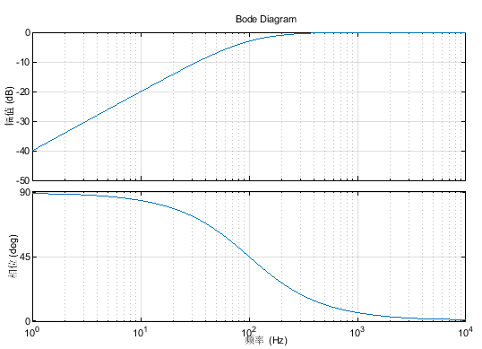
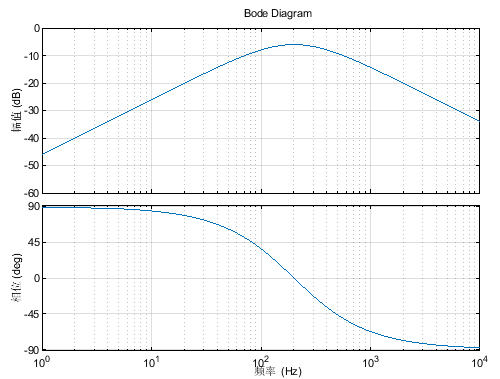
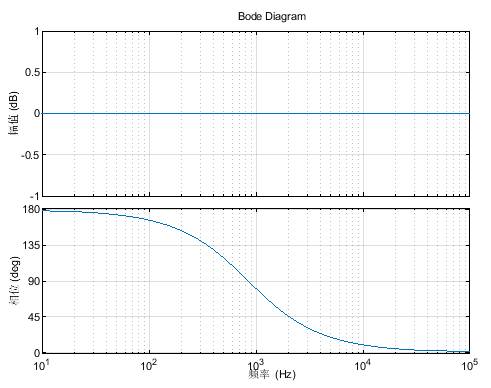
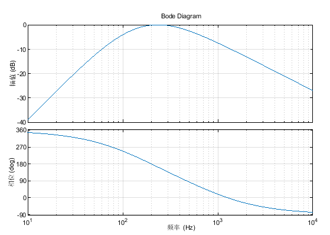
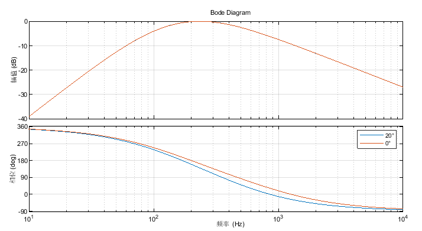

主动阻尼抑制振动——固定频率速度反馈振动提取
1. 概述
中频抑制速度反馈滤波的目的是提取振动频率进行抑制。最终目的是希望提取反馈中的振动频率反向加入到速度指令中，达到共振抑制的目的。
由高通滤波器，带通滤波器，全通滤波器组成。
可调参数有滤波器带宽（高通滤波器时间常数），中频抑制频率（带通滤波器时间常数），中频抑制调相（全通滤波器相关）。
2. 高通滤波
高通滤波，用于滤除低频成分，并且提供90°相位滞后，带宽固定为100Hz。
传函为：

3. 带通滤波器
带通滤波器由一个高通和低通滤波器相乘。
传函为：

4. 全通滤波器
全通滤波器用来调相。
其中频率的选取是为了将关注的频率 $\omega_b$ 的相位调成反向（180°）：

5. 总体
三个滤波器相乘，并尽量保证关注的 $\omega_b$频率幅值为0dB。需要乘系数：
$$\frac{2\sqrt{{\omega_h}^2+{\omega_b}^2}}{\omega_b}$$

此时在$\omega_b$处，幅值为0dB，相位为180°，即提取了反相振动频率。
振动抑制调相${phase_d}$的影响：
